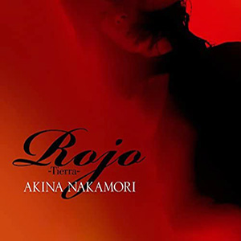

单曲：第49张
发行年份：2015年
发行日期：1月21日
| 歌名 | 作词 | 作曲 | 编曲 |
|---|---|---|---|
| Rojo -Tierra- | 川江美奈子・Miran:Miran | 浅倉大介 | 浅倉大介・鳥山雄司 |
| La Vida | izumi | koshin | koshin・沖仁 |
| Rojo -Tierra- (伴奏) | 浅倉大介 | 浅倉大介・鳥山雄司 | |
| La Vida (伴奏) | koshin | koshin・沖仁 |
DVD（仅限初回限定盤）
| Rojo -Tierra- 制作映像 |
首发规格：CD: UPCH-5833，CD+DVD: UPCH-9989
唱片公司：UNIVERSAL J
排行榜：Oricon公信榜单曲周榜第8位
获奖：第29回日本金唱片大賞 最佳演歌/歌謡曲艺人
专辑首入：FIXER
再发行：2016年7月13日 - 7寸盘: 收入中森明菜アナログセット单曲黑胶限量套装D2JJ-1